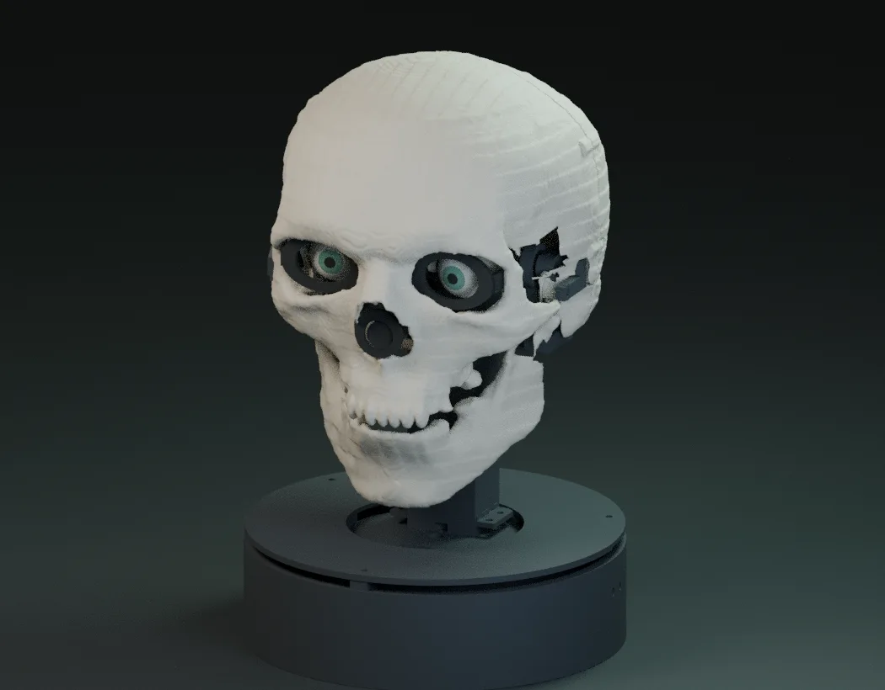

R5 · 얼굴을 따라보는 로봇 헤드
코에 숨긴 카메라로 사람을 찾고 눈과 목을 움직이는 6축 전시용 해골입니다. B25 기구와 A5 허브의 초도 제작 자료를 모았습니다.

조립·구동·전장
초도 제작
P2S PETG HF 18판·57개 기준입니다. 15번 링크와 13번 턱부터 확인합니다. 조립·구동 화면은 CAD 기반이며 완성품은 실물 시험으로 판정합니다.
코에 숨긴 카메라로 사람을 찾고 눈과 목을 움직이는 6축 전시용 해골입니다. B25 기구와 A5 허브의 초도 제작 자료를 모았습니다.

P2S PETG HF 18판·57개 기준입니다. 15번 링크와 13번 턱부터 확인합니다. 조립·구동 화면은 CAD 기반이며 완성품은 실물 시험으로 판정합니다.